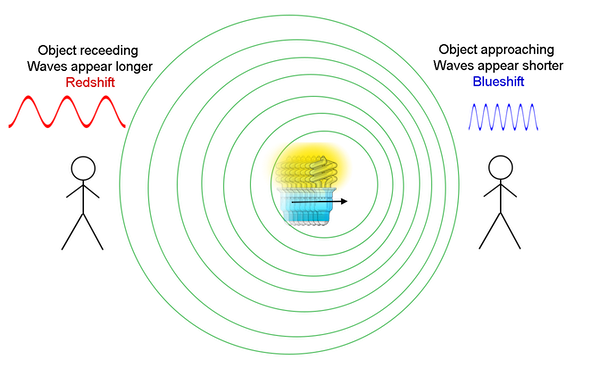
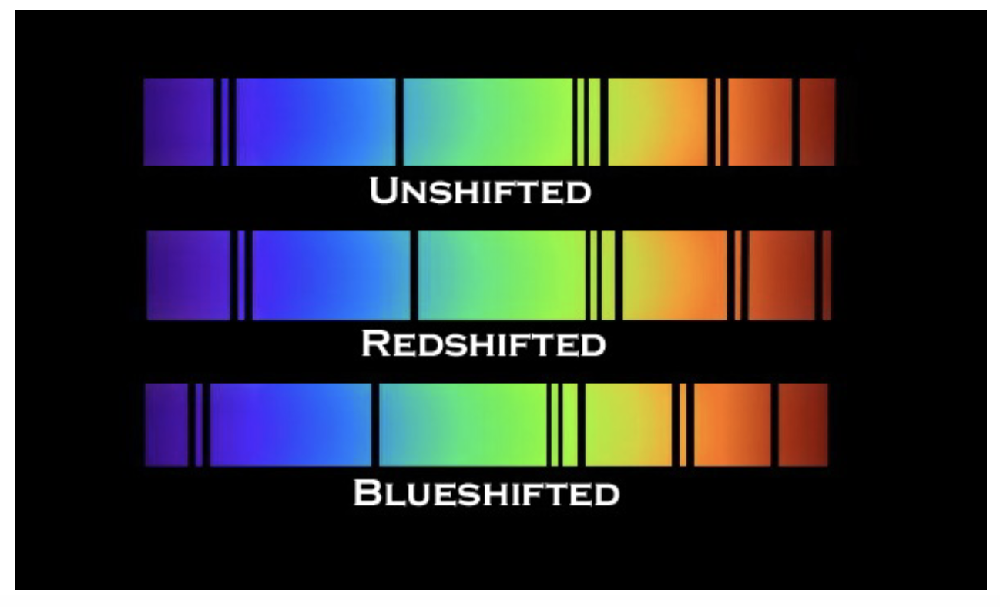
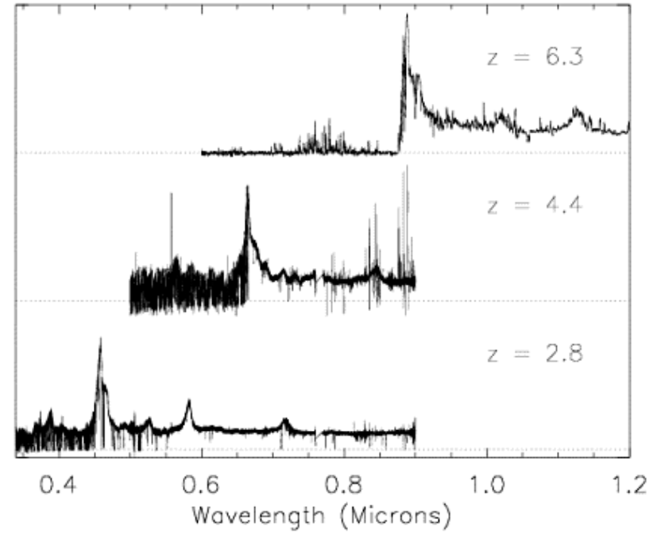
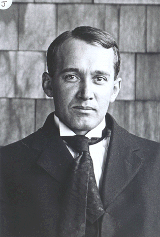
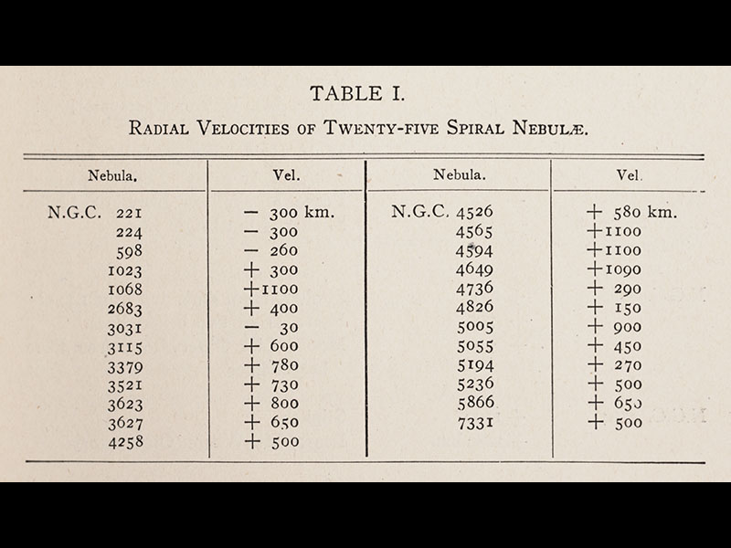
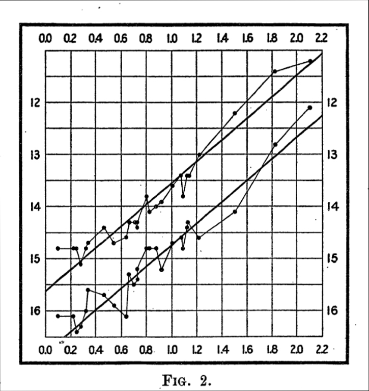
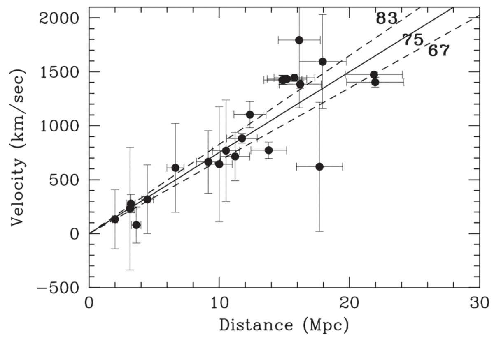
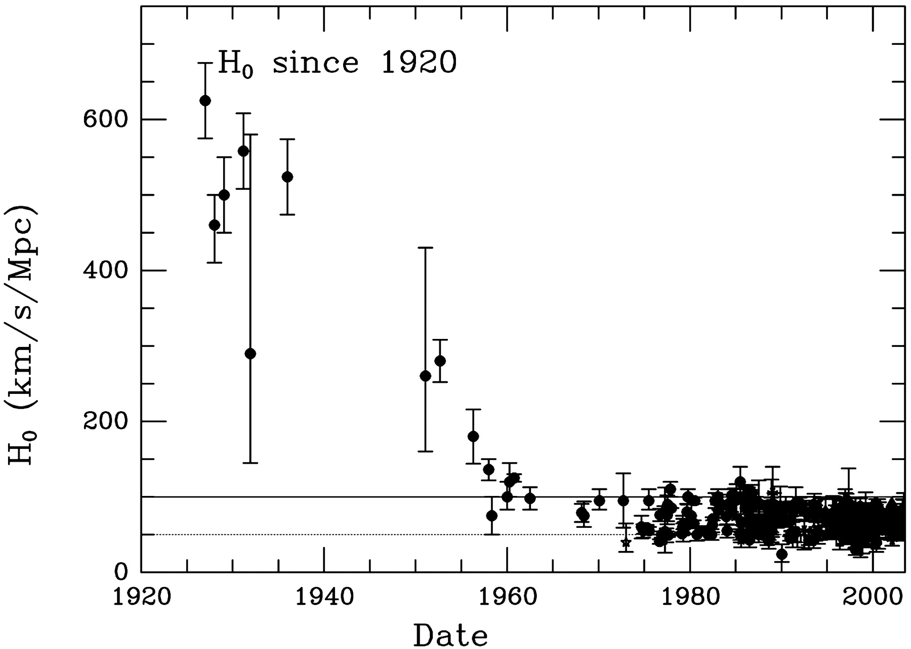
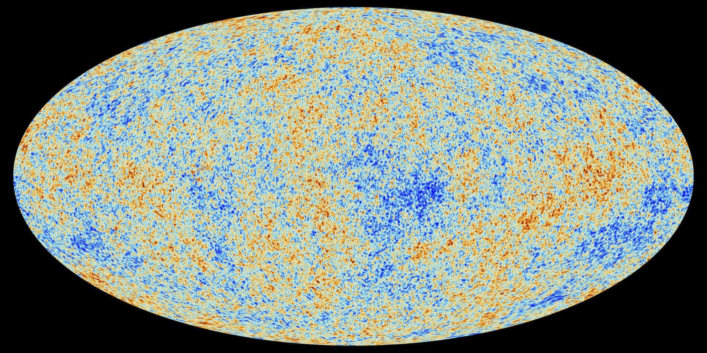

Stockholm University · Department of Astronomy
AS5003 (Cosmology) HT26
Lecture 2 (5 Nov 2026)

Image credit: NASA

E. Hubble (1929), PNAS 15, 168
Practical information
- Homework assignment: Problem set 1 is online in Canvas, under Homework Assignments in Modules, or under Assignments.
Due Tuesday 10 November, 10:00.- Upload your answers in Canvas before the deadline, as a single file (preferably PDF).
- Scanned, handwritten work is acceptable, but needs to be clearly legible (I can only grade what I can read).
- Literature review: the topic choice is posted as an assignment under Literature Assignment, titled Literature Topic Selection.
First topic choice due Thursday 12 November.
Relevant units
- Distance: 1 megaparsec (Mpc) $\approx 3\times10^{22}$ m
distance to Andromeda $\approx 0.75$ Mpc - Time: 1 gigayear (Gyr) $= 10^9$ yr $\approx 3\times10^{16}$ s
age of the Sun $\approx 4.57$ Gyr - Mass: 1 solar mass ($M_\odot$) $\approx 2\times10^{30}$ kg
mass of the Milky Way $\approx 10^{12}\,M_\odot$
Recap: fundamental observations
- The night sky is dark
The Universe has a finite age, so we only see stars out to $r \sim c t_0 \ll \lambda$.
- The universe is isotropic and homogeneous on large scales
- Cosmic Microwave Background
- Proportions of light elements (H, D, He, Li)
- Galaxies are receding from each other with a velocity proportional to their distance
Recap
Try it: is the real Universe homogeneous?
Data: 2dFGRS (Colless et al. 2001), both strips, projected
Far away the survey only sees the brightest galaxies, so we only compare circles at the same redshift.
Recap: fundamental observations
- The night sky is dark
- The universe is isotropic and homogeneous on large scales
- Cosmic Microwave Background
- Proportions of light elements (H, D, He, Li)
- Galaxies are receding from each other with a velocity proportional to their distance ← Today's topic!
How do we measure velocity? How do we measure distance?
Measuring velocities
The Doppler effect

A source moving away from (or towards) us at speed $v \ll c$ shifts the wavelength:
$$\lambda_\text{obs} = \lambda_\text{em}\left(1 + \frac{v}{c}\right)$$
$$\frac{\lambda_\text{obs} - \lambda_\text{em}}{\lambda_\text{em}} = \frac{v}{c}$$
- Moving away: longer wavelength, redshift
- Moving towards us: shorter wavelength, blueshift
Warm-up exercise: Doppler effect
You are pulled over by the police for not stopping at a red light. Having just learned about the Doppler effect, you try this defence: "At the speed I was going, the red light appeared green!"
How fast would you have to be driving for red light to appear green?
(Take green light as 500 nm and red light as 600 nm.)
$$\frac{v}{c} = \frac{\lambda_\text{obs} - \lambda_\text{em}}{\lambda_\text{em}} = \frac{500 - 600}{600} = -\frac{1}{6} \;\Rightarrow\; |v| \approx 5\times10^4\ \text{km/s}$$ About $1.8\times10^8$ km/h: you get a speeding ticket instead.
Try it: drive through the red light
The three lamps of a traffic light (630, 590 and 505 nm), seen by a driver moving at speed $v$. Negative $v$: driving towards the light.
Such a line shift is visible in galaxy spectra

Wavelength increases to the right (violet → red): redshifted lines move right, blueshifted lines left
By measuring the observed wavelengths of identifiable spectral features (e.g. the Balmer lines of hydrogen), and comparing them with the rest wavelengths, we can calculate the relative velocities.
This is described by the redshift $z$:
$$z \equiv \frac{\lambda_\text{obs} - \lambda_\text{em}}{\lambda_\text{em}} \quad \left(= \frac{v}{c}\right)$$
Try it: redshift a spectrum
Slide the redshift and watch the emission lines move to longer wavelengths.
Schematic spectrum built from real rest wavelengths, not a real object. The rainbow bar marks visible light.
Example: observed quasar spectra
Which of these is furthest away? Which is closest?

z = ? z = ? z = ?The circled emission line is the Lyα (2→1) transition of hydrogen in all three spectra, i.e. at the same rest wavelength (1216 Å).
The top one is furthest: its Lyα is shifted the most ($z = 6.3$). Then $z = 4.4$ and $z = 2.8$.
All but the very closest galaxies show a positive redshift

Vesto Slipher, director of Lowell Observatory in Arizona

Velocities of 25 spiral nebulae (Slipher 1917)
These are the spiral nebulae: inside or outside our Galaxy?
Most are redshifted, some by more than 1000 km/s. A few, such as Andromeda (NGC 224), are blueshifted.
Slipher had the velocities. What was missing was the distances.
Measuring distances
The Shapley–Curtis Great Debate (1920)
Harlow Shapley (left) and Heber Curtis (right)
The spiral nebulae, seen since 1845, were still a mystery. In 1920 the question came to a head in the Great Debate.
Central question: how big is our Universe? Is the Milky Way all there is?
Shapley argued that the Milky Way Galaxy was the entire universe, and that "spiral nebulae" were inside the Milky Way.
Curtis argued that these "nebulae" were galaxies like our own: Slipher's speeds were too fast for objects bound to the Milky Way.
It could not be settled in 1920: nobody could measure the distance to a nebula.
Cepheid variable stars: the first "standard candle"
Henrietta Leavitt (1868–1921)
Leavitt discovered that the luminosity of Cepheids is related to their pulsation period: bright ones pulsate slowly, faint ones fast.
Leavitt's law: $L = K\,P^{\alpha}$ (slope $\alpha$ from her diagram)
Calibrate $K$ with a Cepheid of known distance (e.g. parallax). Then:
$$f = \frac{L}{4\pi r^2} \;\Rightarrow\; r = \sqrt{\frac{L}{4\pi f}}$$$L$: from the period $P$ · $f$: the flux we measure
The "dimness" of Cepheids in Andromeda and other "spiral nebulae" (Hubble 1925) showed that they are far outside our Galaxy. Curtis was right.

Leavitt (1912): apparent magnitude (brighter is up) against the logarithm of the period. Each star twice: at its brightest and faintest.
Combining distance and velocity: Hubble's law
E. Hubble (1929), PNAS 15, 168
Edwin Hubble
$$v = H_0\, D$$
- $H_0$: the Hubble constant, in km/s/Mpc
- $v = cz$: the velocity
- $D$: the distance
Hubble's estimate: $H_0 \approx 500$ km/s/Mpc.
A modern Hubble diagram

Freedman et al. (2001), ApJ 553, 47 (Ryden Fig. 2.5)
- Distances from Cepheids (Hubble Space Telescope)
- Lines: $H_0 = 67$, $75$, $83$ km/s/Mpc
- Hubble (1929): $H_0 \approx 500$ km/s/Mpc
All of Hubble's distances were too small. For example, galaxies with $v \approx 1000$ km/s:
- Hubble: $D \approx 2$ Mpc
- Today: $D \approx 15$ Mpc
Distances about 7× too small → $H_0$ about 7× too large
Measurement of $H_0$ over time

From about 500 (Hubble 1929) down to 67–73 km/s/Mpc today.
But the two best methods disagree:
- Early Universe (CMB, Planck):
$H_0 = 67.4 \pm 0.5$ - Local distance ladder (Cepheids + supernovae, SH0ES):
$H_0 = 73.0 \pm 1.0$
The Hubble tension (about 5σ): an open question, and a good literature-project topic.
Does Hubble's law make our location special?
Almost every galaxy moves away from us, faster the further away it is.
Are we at the centre of the expansion?
Think of raisins in a rising bread dough: from every raisin, all the others move away, faster when they are further.
To check that this works for galaxies, describe the expansion with one function: the scale factor $a(t)$.
Click a raisin to make it our galaxy: the dough then rises.
Hubble's law arises naturally in a universe undergoing homogeneous & isotropic expansion
$$r_{12}(t) = a(t)\,r_{12}(t_0), \quad r_{23}(t) = a(t)\,r_{23}(t_0), \quad r_{31}(t) = a(t)\,r_{31}(t_0)$$
- $a(t)$: the scale factor, normalised to $a(t_0) = 1$ today
- homogeneous: $a$ is a function of $t$, but not of $\vec r$
- isotropic: $a$ is a scalar, the same in every direction
$$v_{12}(t) = \frac{dr_{12}}{dt} = \frac{da}{dt}\,r_{12}(t_0) = \frac{\dot a}{a}\,r_{12}(t)$$
$$v = H(t)\,r, \qquad H(t) \equiv \frac{\dot a}{a}$$ $H(t)$: the "Hubble parameter"; $H_0 = H(t_0)$: the "Hubble constant"
Hubble time
$$H_0 \approx 70\ \text{km/s/Mpc}$$
$H_0$ is today's rate of expansion, with units 1/time:
$$H_0 \approx 70\,\frac{\text{km}}{\text{s Mpc}} \times \frac{10^3\,\text{m}}{1\,\text{km}} \times \frac{1\,\text{Mpc}}{3.1\times10^{22}\,\text{m}} \approx 2.2\times10^{-18}\,\text{s}^{-1}$$
Every second, all distances between galaxies grow by a fraction $2.2\times10^{-18}$.
$$\frac{1}{H_0} \approx 4.4\times10^{17}\,\text{s} \approx 1.4\times10^{10}\ \text{years} \approx 14\ \text{Gyr}$$
So if the Universe has been expanding at a constant rate $H_0$, it is about 14 billion years old.
Try it: Hubble time
Try Hubble's 500 km/s/Mpc.
Relation between redshift and scale factor
Think of the redshift of galaxies as the wavelength being "stretched" as space expands. The ratio of observed and emitted wavelengths is the ratio of scale factors:
$$\frac{\lambda_\text{obs}}{\lambda_\text{em}} = \frac{a(t_\text{obs})}{a(t_\text{em})} = \frac{1}{a(t_\text{em})}$$
From the definition of redshift:
$$1 + z = \frac{1}{a(t_\text{em})}$$
(We derive this properly from the Robertson–Walker metric next week; see also Ryden §3.5.)
Example: back to our quasars
How small was our Universe when the light from the middle quasar was emitted?
$$a = \frac{1}{1+z} = \frac{1}{1 + 4.4} \approx 0.19$$
The Universe was about 5.4× smaller: all distances between galaxies were shorter by this factor.
Common confusion: relativistic Doppler effect and redshift
For large enough $D$, Hubble's law gives velocities greater than $c$. Should we use the special-relativistic Doppler formula instead?
Doppler ($v \ll c$)
$$\frac{\lambda_\text{obs}}{\lambda_\text{em}} = 1 + \frac{v}{c}$$
Special relativity
$$\frac{\lambda_\text{obs}}{\lambda_\text{em}} = \sqrt{\frac{1 + v/c}{1 - v/c}} \quad ?$$
No. The redshifts of galaxies come from the expansion of space, not from motion through space. We define
$$\frac{\lambda_\text{obs}}{\lambda_\text{em}} = 1 + z$$
… and $v = cz$ can be larger than $c$ when $z > 1$.
Expansion and peculiar motion
Hubble: the Universe is expanding, so galaxies farther away recede from us faster.
But gravity also moves things: the Earth orbits the Sun, the Sun orbits the centre of the Milky Way.
This motion through space is called peculiar motion.
Peculiar velocities and redshifts
The velocity we measure from the Doppler shift has two parts:
- cosmological redshift, due to the expansion of the universe
- an extra Doppler shift, due to the peculiar velocity: real motion through space, so never faster than $c$
$$z \approx z_\text{cosmological} + \frac{v_\text{peculiar}}{c}$$
Peculiar velocities are $\lesssim 3000$ km/s, so the expansion dominates beyond $z \gtrsim 0.01$.
● real positions, arrows: velocities. ● where a survey puts them
 z ≈ 0.017, ≈ 70 Mpc
z ≈ 0.033, ≈ 140 Mpc
Coma cluster: a "finger"
z ≈ 0.017, ≈ 70 Mpc
z ≈ 0.033, ≈ 140 Mpc
Coma cluster: a "finger"pointing at us
CfA redshift slice (de Lapparent, Geller & Huchra 1986). We are at the bottom tip; radial axis cz in km/s, out to z ≈ 0.05 (≈ 210 Mpc, ≈ 0.7 Gyr ago)
The clearest sign of the cosmological principle: the CMB
- Galaxy surveys are messy: clustering, peculiar velocities, survey edges.
- The CMB has the same temperature in every direction, $T_0 = 2.7255$ K, to about 1 part in 100,000 (the colours).
- More in the CMB lecture.

The CMB over the whole sky, from Planck. Image: ESA and the Planck Collaboration (CC BY 4.0)
Back to Slipher's spirals
Velocities of 25 spiral nebulae (Slipher 1917)
Can you now guess why a few of these spirals, such as Andromeda (NGC 224), are blueshifted?
$z \approx z_\text{cosmological} + v_\text{peculiar}/c$
They are very close. For Andromeda ($D \approx 0.8$ Mpc) the expansion gives only $H_0 D \approx 55$ km/s.
Its peculiar velocity towards us is a few hundred km/s, so close by the peculiar velocity wins.
Exercise session
Exercises on redshifts: available on Canvas under the Lecture 2 module.
Before next time
- Homework 1 is due Tuesday 10 November, 10:00, in Canvas
- Read Ryden chapter 3: curvature and the Robertson–Walker metric
- Literature project: first topic choice due Thursday 12 November